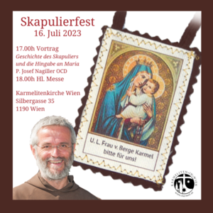

Skapulierfest
Unsere Liebe Frau vom Berge Karmel
Das Skapulierfest ist das Hochfest Unserer Lieben Frau vom Berge Karmel.
Wien
Das Skapulierfest im Konvent Wien

Skapulierfest im Karmel Miittwoch 16. Juli 2025
· 16:30 Vortrag: „Maria-Mutter der Hoffnung“ mit P. Roberto M. Pirastu OCD
· 17.30h Rosenkranz
· 18.00h FEIERLICHES HOCHAMT
· Anschließend Gartenfest mit musikalischer Begleitung, Ukulele
Freiwillige Spenden kommen dem Kloster zugute
Live auf Sendung bei Radio Maria: DAB+ SimplyTV AonTV Internet Sat
Linz
Das Skapulierfest im Konvent Linz

Am 16. Juli wird im Karmelitenorden das Hauptfest "Unsere Liebe Frau vom Berge Karmel" gefeiert. Wir begehen am Sonntag, den 13. Juli, die vorverlegte "äußere Feier" und laden sie herzlich zur Teilnahme ein. Der Gottesdienst wird musikalisch gestaltet von den Cantores Carmeli unter der Leitung von Markus Stumpner.
Programm:
John Rutter - Missa brevis
John Rutter - Open thou mine eyes, The Lord bless you and keep you
Michael Stenov - Bearbeitungen des Flos Carmeli, Magnificat, Gotteslobbearbeitungen
Solisten:
Marina Schacherl - Orgel